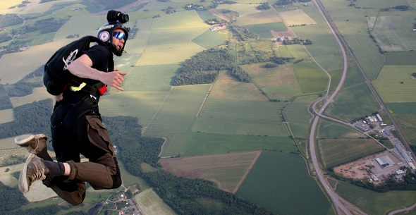

I'm a senior tools programmer with over twelve years in game engine development, working across tools, systems and rendering in large C++ codebases. Since January 2026 I'm at Massive Entertainment, part of a small team developing tools in Snowdrop using C++ and Python. Before that I spent six and a half years at Ubisoft Stockholm on Snowdrop tools and later on Ubisoft Scalar, and earlier worked on the Defold engine at King and on real-time eye tracking at Tobii.
I hold an M.Sc. in Computer Science and Media Technology from Linköping University (2014), with a focus on computer graphics and simulation. Before university I served in the Swedish Armed Forces as a communications and EOD equipment technician.

When I'm not coding I'm usually outdoors, hiking in summer, skiing in winter, or skydiving. I've been an instructor at Linköping Skydiving Club since 2012.